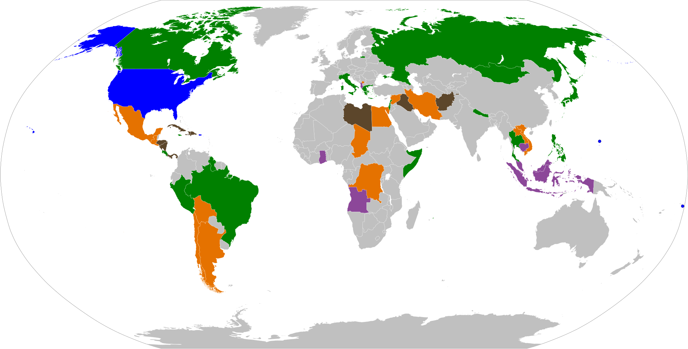
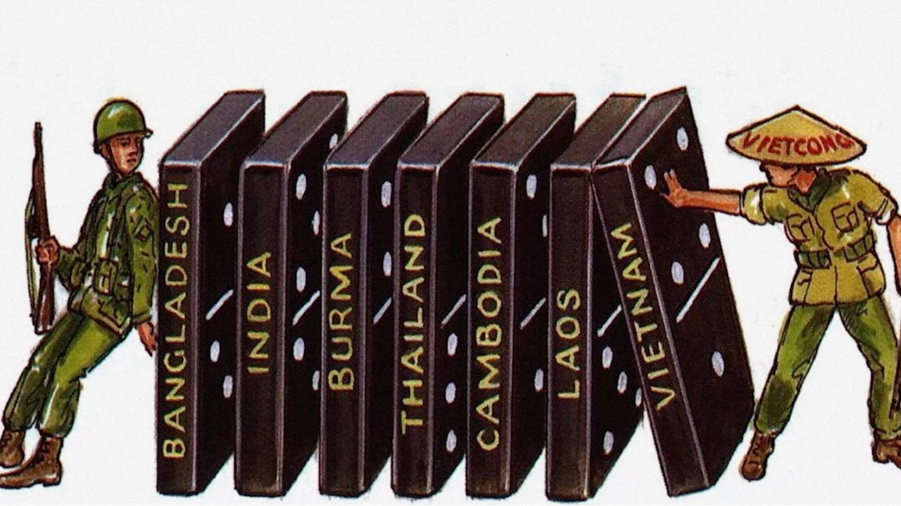
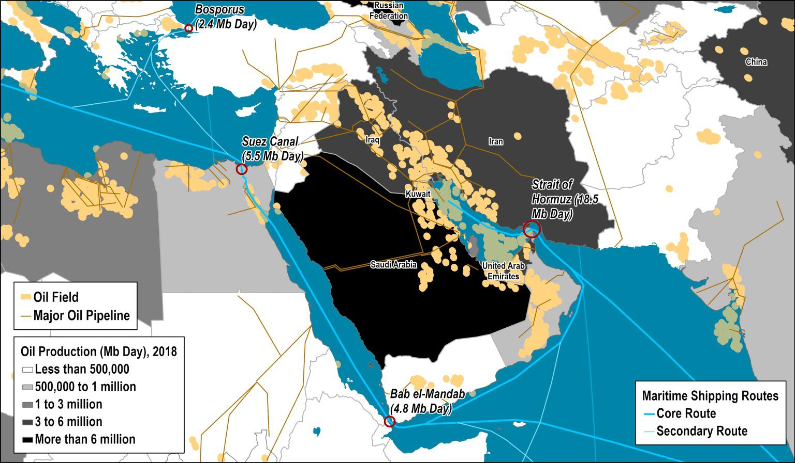
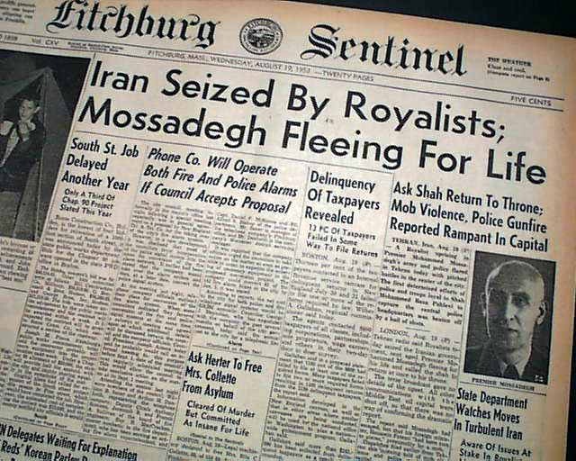
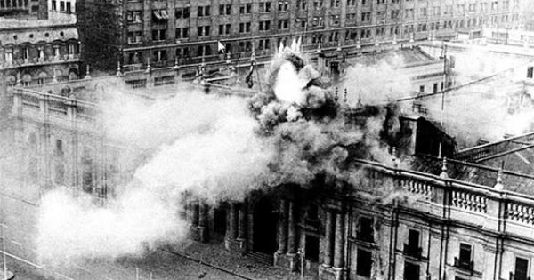
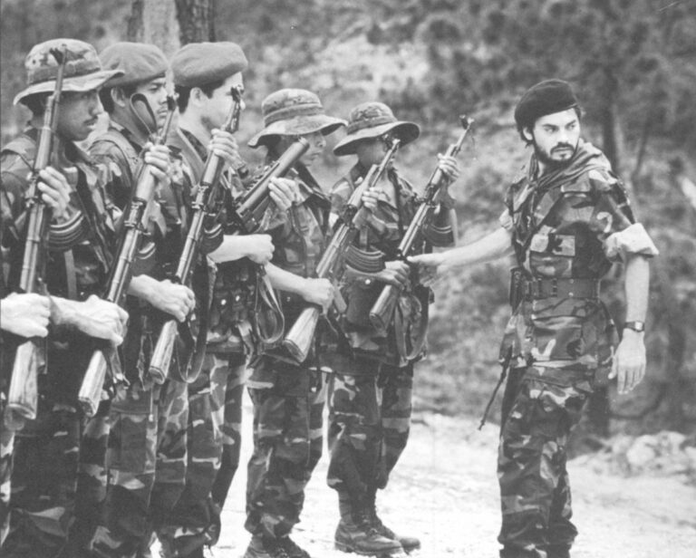
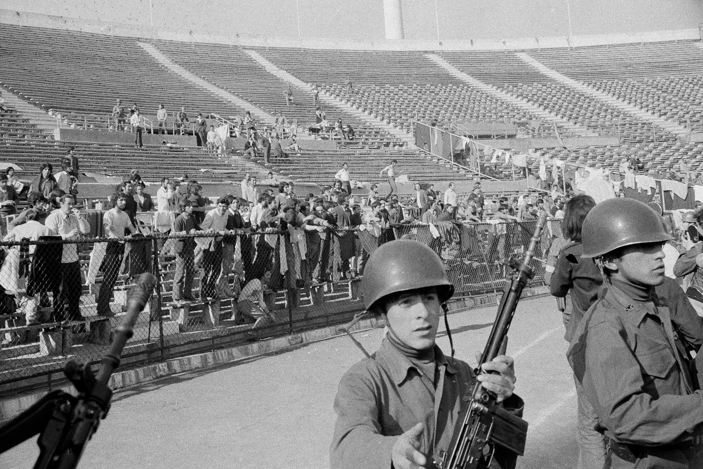
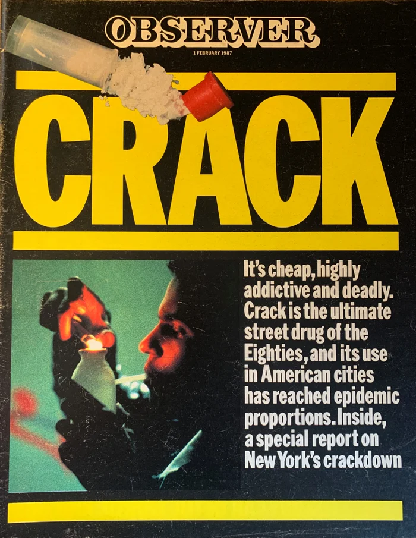
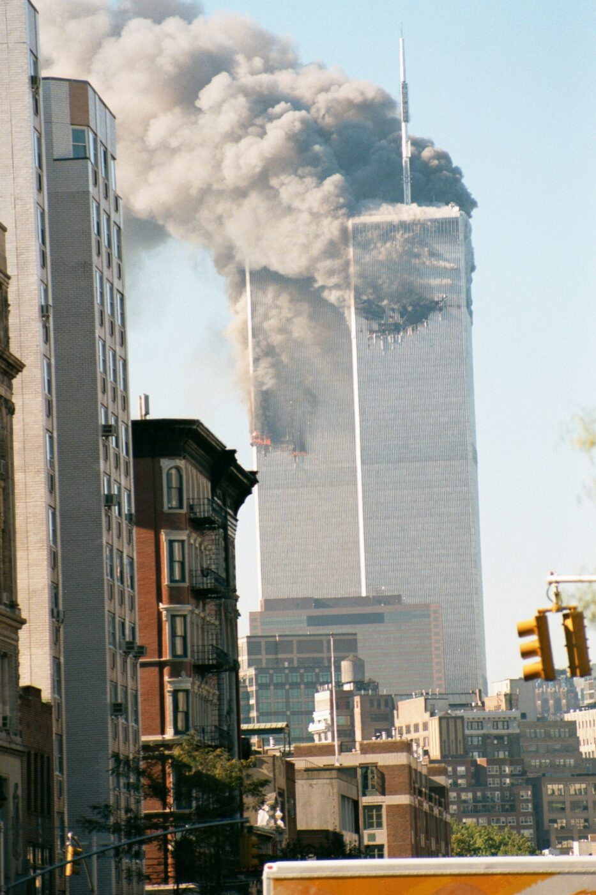

The US Foreign Policies
Hidden Costs & Covert Intervention
Presented by: ARAB Massyl
A Policy in the Shadows
- 80+ Attempts (1946–1991).
- Executed by the CIA.
- Goal: Plausible Deniability.
The Tool: The Proxy
Reliance on Local Groups / Allied Agencies.
- Examples: Contras (Nicaragua), ISI (Pakistan).
- The Risk: Unforeseen consequences.
Global Reach of Covert Actions

■ USA
■ Election Interference
■ Successful Coup
■ Failed Coup
■ Invasion
Interference caused lasting Harm and Suffering abroad.
Part 1: The Rationale
Why Intervene?
1. Ideology (Containment)
Stop Soviet-aligned Communism.
"The Domino Theory"
If one country falls, the region follows.
2. Economics (Resources)
Protect US corporate profits against Nationalization.
Key Resources:
- Oil (Middle East)
- Copper (Chile)

Moral Contradiction
Fighting Authoritarianism...
...by installing US-backed military rule?

Part 2: The Methods
1. Covert Coups (Iran 1953)
Operation Ajax
- Cost: ~$1 Million.
- Action: Bribed officials.
- Result: Installed the Shah.

2. Funding Chaos (Chile)
"Make Economy Scream"
- Economic Warfare: Blocking loans.
- Active Financing: Funded strikes & propaganda.
- Result: 1973 Military Coup.

3. Proxy Forces
Afghanistan & Nicaragua
- Armed Contras & Mujahideen.
- Maintained deniability.
- Result: War came home.

Part 3: The Ultimate Harm
Harm Abroad: Latin America
🇨🇱 Chile: ~3,200 dead, 38,000 tortured.
🇳🇮 Nicaragua: 30,000 - 50,000 dead.
🇬🇹 Guatemala: Over 200,000 dead.

Harm to Americans: Crack Epidemic

Domestic Blowback
- Contras trafficked cocaine.
- Incarceration: 50k → 400k.
- Disparity: 100-to-1 sentencing.
Harm to Americans: 9/11
Cost of Disengagement
- US Aid: Billions to Mujahideen.
- Vacuum: Rise of Taliban & Al-Qaeda.
- Blowback: Death of 2,977 civilians.

Final Proof
"Despite years of official denial, the ultimate proof comes from the highest levels."
Click video to play
Conclusion
- The Failure: Short-term gains led to long-term disaster.
- Pattern Continues: Iraq War (2003) → 200k+ dead & rise of ISIS.
- The system failed its moral and practical duty.
Discussion
"Only for a Very Good Cause."
Did the means of meddling justify the ends of containment?
Q&A
Test Your Understanding
Question 1: The Strategy Question
What is the primary strategic advantage of using "Proxy Forces"?
- A. Lower financial costs
- B. Maintains "Plausible Deniability"
- C. Better military effectiveness
- D. Faster results
✓ Correct Answer: B
Allows the US to deny involvement if things go wrong
Question 2: The Motivation Question
Besides fighting Communism, what was the other major driver for intervention?
- A. Spreading democracy
- B. Humanitarian concerns
- C. Protecting Economic Interests
- D. Building military alliances
✓ Correct Answer: C
Protecting US corporate profits in oil and copper
Question 3: The Terminology Question
What does the term "Blowback" refer to in this context?
- A. Media criticism of foreign policy
- B. Congressional investigations
- C. Unintended negative consequences returning to harm the US
- D. Public protests against war
✓ Correct Answer: C
Examples: 9/11, crack epidemic
Question 4: The Ethical Question
What was the central "Moral Contradiction" discussed?
- A. Promoting peace while building weapons
- B. Destroying democracies to "save" them
- C. Fighting terror while creating instability
- D. Claiming freedom while supporting occupation
✓ Correct Answer: B
Replacing elected leaders with dictators like Pinochet
Question 5: The Historical Pattern Question
What pattern connects the 1953 Iran Coup to the 2003 Iraq War?
- A. Both involved oil resources
- B. Short-term success leading to long-term instability
- C. Both used proxy forces
- D. Both were covert operations
✓ Correct Answer: B
Initial "victories" that created decades of problems
Primary Sources
- The Church Committee (1975): Covert Action in Chile.
- The Kerry Committee (1989): Drugs, Law Enforcement....
- The Rettig & Valech Reports (1991/2004): Chilean Truth Commissions.
- Commission for Historical Clarification (1999): Guatemala: Memory of Silence.
- Brown University "Costs of War": Iraq War Statistics.
- Bureau of Justice Statistics: Trends in U.S. Corrections.
Secondary Sources
- Weiner, Tim (2007): Legacy of Ashes.
- Coll, Steve (2004): Ghost Wars.
- Levin, Dov (2016): "Partisan electoral interventions...".
- Video Source: James Woolsey, Interview on The Ingraham Angle, 2018.